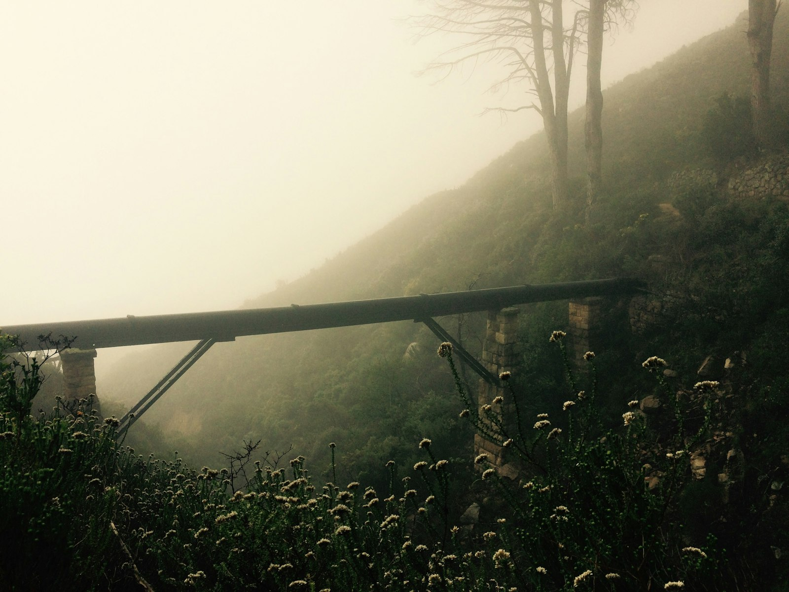

Trash & Recycling
Pickup days, missed collection, bulk items, and what goes in the blue cart.
"My green bin wasn't picked up on Tuesday — who do I call?"
Send a message and a real city helper will answer your question about trash pickup, permits, potholes, parks, or anything else. No forms to fill out, no phone trees — just type your question in plain words.
Open Monday–Friday, 7:30am to 6:00pm. Average wait: under 3 minutes.
Anything the city handles — here are three of the most common topics residents bring up. Tap one to see a sample question, or just start a chat and we'll point you the right way.
Pickup days, missed collection, bulk items, and what goes in the blue cart.
Building, fence, block-party, dog tags, business licenses, and renewals.
Potholes, broken streetlights, park hours, playground repairs, and trees.
Four small steps. The whole chat usually takes 5 to 10 minutes.
Choose what your question is about — or just write "I'm not sure" and we'll help you figure it out.
Use everyday words. No need for official terms. Photos are welcome if it helps explain.
A real person at City Hall reads your message and replies. Usually within a few minutes.
Save the number so you can check back later or follow up with the right department.
Most residents who use this service have never used a chat tool before. Our helpers are trained to be patient, use plain language, and walk you through anything that's confusing. There are no wrong questions.
